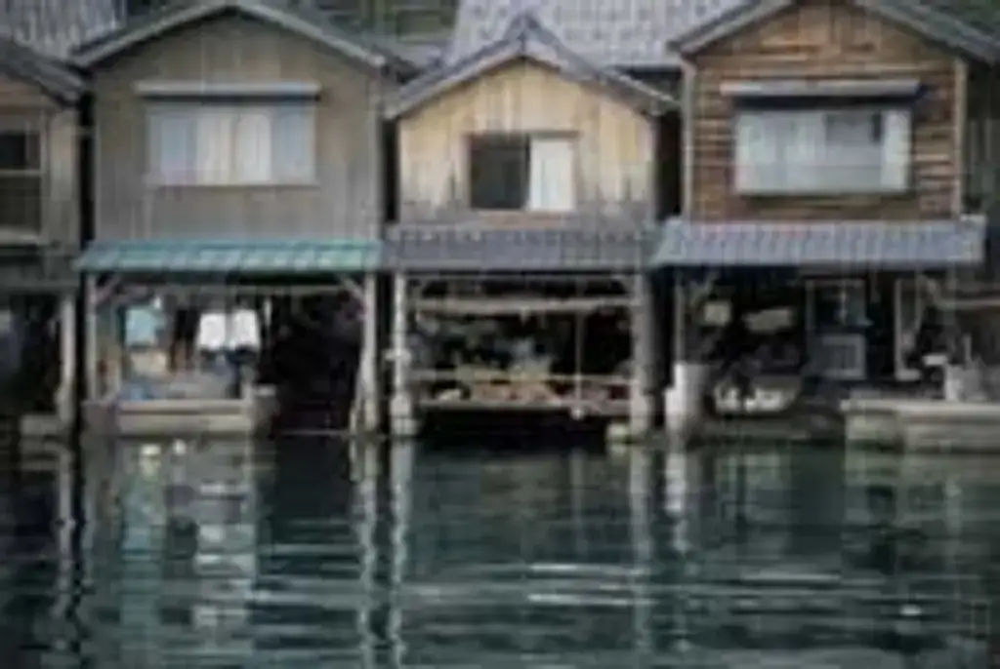

Ine, Kyoto: things to do, food and stays
Ine · Kyoto
Ine
Highlighted on the Kyoto map.

Sights

Dining
guri
guri
Cafe in Ine.
Itarianbaru Pieno Ine Branch
イタリアンバール ピエーノ伊根店
Italian restaurant in Ji Honjo Hama, Ine. Open Mon-Fri 11:00-14:00.
Uminomiya (wadatsumi)
海宮 (wadatsumi)
Japanese restaurant in Ine. Open Thu-Tue 11:00-15:00, 17:30-21:00.
Dining listings marked “Dining in” use data © OpenStreetMap contributors (ODbL); photos are from each venue’s own site or Wikimedia Commons as credited.